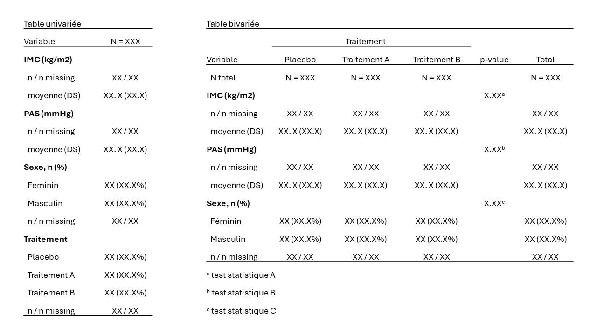

Chapter 7 Tableaux
Dans ce chapitre, nous présenterons quelques packages permettant d’obtenir des tables descriptives complètes, faciles à mettre en forme pour les intégrer dans un rapport d’analyse.
7.1 Base d’exemple pour une analyse uni- et bivariée
Nous allons utiliser la base df_1 déjà utilisées au sein de laquelle nous allons créer quelques données manquantes pour corser les choses !
rm(list=ls())
## Import des données
df_1 <- read.csv2("data/df_1.csv")
meta_df_1 <- read.csv2("data/meta_df_1.csv")
# pour chaque variable, 10% des valeurs sont remplacées au hasard par des manquants
set.seed(6543)
df_1miss <- df_1
for (i in 2:ncol(df_1miss)) {
df_1miss[[i]] <- ifelse(rbinom(n = nrow(df_1miss), size = 1, prob = 0.10) == 1,
NA, df_1miss[[i]])
}
summary(df_1miss)## subjid sex imc trait
## Min. : 1.00 Min. :0.0000 Min. :15.40 Min. :1.000
## 1st Qu.: 75.75 1st Qu.:0.0000 1st Qu.:22.20 1st Qu.:1.000
## Median :150.50 Median :1.0000 Median :24.50 Median :2.000
## Mean :150.50 Mean :0.5054 Mean :24.36 Mean :1.906
## 3rd Qu.:225.25 3rd Qu.:1.0000 3rd Qu.:26.30 3rd Qu.:3.000
## Max. :300.00 Max. :1.0000 Max. :32.20 Max. :3.000
## NAs :23 NAs :37 NAs :33
## pas
## Min. : 92.0
## 1st Qu.:125.0
## Median :138.0
## Mean :137.2
## 3rd Qu.:149.0
## Max. :177.0
## NAs :33# on va créer des variables qualitatives au format factor pour le sexe et traitement
df_1miss$sexL <- factor(df_1miss$sex,
labels = meta_df_1$labs[meta_df_1$var == "sex"])
df_1miss$traitL <- factor(df_1miss$trait,
labels = meta_df_1$labs[meta_df_1$var == "trait"])
## pensez à vérifier que le recodage est correct
# table(df_1miss$sexL, df_1miss$sex)
# table(df_1miss$traitL, df_1miss$trait)
# mise à jour de la base de méta données
meta_df_1 <- rbind(meta_df_1,
data.frame(var = "sexL",
label = meta_df_1$label[meta_df_1$var == "sex"],
id_labs = names(table(as.numeric(df_1miss$sexL))),
code_labs = as.numeric(names(table(as.numeric(df_1miss$sexL)))),
labs = levels(df_1miss$sexL)))
meta_df_1 <- rbind(meta_df_1,
data.frame(var = "traitL",
label = meta_df_1$label[meta_df_1$var == "trait"],
id_labs = names(table(as.numeric(df_1miss$traitL))),
code_labs = as.numeric(names(table(as.numeric(df_1miss$traitL)))),
labs = levels(df_1miss$traitL)))L’objectif sera de faire une table descriptive univariée de l’IMC, de la PAS, du sexe et du traitement. Puis, on fera une table bivariée de l’IMC, de la PAS et du sexe en fonction des groupes de traitement.
7.2 Package table1
Le package table1 permet de mettre facilement en forme des tableaux de statistiques descriptives uni- ou bivariées que l’on peut ensuite copier-coller dans un rapport (ou directement l’intégrer dans un rapport écrit avec Rmarkdown ou Quarto).
7.2.1 Tables univariées
Une table univariée peut être obtenue avec une écriture au format formula, où les variables à décrire sont à gauche d’un signe ~ espacés de +. Voici un exmple ci-dessous
library(table1)
## Pour une analyse descriptive univariée
table1(~ imc + pas + traitL + sexL, data = df_1miss)| Overall (N=300) |
|
|---|---|
| imc | |
| Mean (SD) | 24.4 (3.04) |
| Median [Min, Max] | 24.5 [15.4, 32.2] |
| Missing | 37 (12.3%) |
| pas | |
| Mean (SD) | 137 (16.9) |
| Median [Min, Max] | 138 [92.0, 177] |
| Missing | 33 (11.0%) |
| traitL | |
| Placebo | 104 (34.7%) |
| Traitement A | 84 (28.0%) |
| Traitement B | 79 (26.3%) |
| Missing | 33 (11.0%) |
| sexL | |
| Féminin | 137 (45.7%) |
| Masculin | 140 (46.7%) |
| Missing | 23 (7.7%) |
A noter que par défaut, les données manquantes des variables catégorielles sont considérées comme une catégorie à part entière, et les pourcentages sont calculés en prenant en compte les manquants. Par exemple pour le sexe, 45.7% + 46.7% + 7.7% = 100% en prenant en compte les 7.7% de données manquantes.
Généralement pour calculer les pourcentages, on préfèrera exclure les données manquantes.
Le package table1 permet d’ajouter un nom de variable plus explicite aux variables :
## la fonction label() permet d'ajouter un nom de variable sous forme d'attribut
label(df_1miss$sexL) <- meta_df_1$label[meta_df_1$var == "sexL"][1]
label(df_1miss$traitL) <- meta_df_1$label[meta_df_1$var == "traitL"][1]
label(df_1miss$imc) <- meta_df_1$label[meta_df_1$var == "imc"]
label(df_1miss$pas) <- meta_df_1$label[meta_df_1$var == "pas"]
attributes(df_1miss$sexL)## $levels
## [1] "Féminin" "Masculin"
##
## $class
## [1] "factor"
##
## $label
## [1] "Sexe"## $label
## [1] "IMC (kg/m²)"## si on relance la fonction, les noms de variables explicites sont visibles
table1(~ imc + pas + traitL + sexL, data = df_1miss)| Overall (N=300) |
|
|---|---|
| IMC (kg/m²) | |
| Mean (SD) | 24.4 (3.04) |
| Median [Min, Max] | 24.5 [15.4, 32.2] |
| Missing | 37 (12.3%) |
| PAS (mmHg) | |
| Mean (SD) | 137 (16.9) |
| Median [Min, Max] | 138 [92.0, 177] |
| Missing | 33 (11.0%) |
| Traitement | |
| Placebo | 104 (34.7%) |
| Traitement A | 84 (28.0%) |
| Traitement B | 79 (26.3%) |
| Missing | 33 (11.0%) |
| Sexe | |
| Féminin | 137 (45.7%) |
| Masculin | 140 (46.7%) |
| Missing | 23 (7.7%) |
Il est possible de choisir plus spécifiquement quels paramètres afficher. Pour plus d’information sur les paramètres de distributions disponibles avec table1, vous pouvez chercher dans l’aide ?stats.default.
## function (x, ...)
## {
## with(stats.apply.rounding(stats.default(x, ...), ...), c("",
## `Mean (SD)` = sprintf("%s (%s)", MEAN, SD), `Median [Min, Max]` = sprintf("%s [%s, %s]",
## MEDIAN, MIN, MAX)))
## }
## <bytecode: 0x000001e0014ac2a8>
## <environment: namespace:table1>## function (x, ..., na.is.category = TRUE)
## {
## c("", sapply(stats.apply.rounding(stats.default(x, ...),
## ...), function(y) with(y, sprintf("%s (%s%%)", FREQ,
## if (na.is.category) PCT else PCTnoNA))))
## }
## <bytecode: 0x000001e0014a0e78>
## <environment: namespace:table1>On peut créer de nouvelles fonctions de rendu en prenant ces deux fonctions pour modèle. Ci-dessous, on va créer une fonction de rendu pour les variables quantitatives qui ne donne que la moyenne et la déviation standard entre parenthèses.
Puis, on va créer une fonction de rendu pour les variables catégorielles qui calcule les pourcentages en excluant les données manquantes.
# fonction pour afficher uniquement la moyenne +/- écart type pour les variables
# quantitatives
render_var_quanti <- function(x) {
with(stats.default(x),
c("",
`Mean (SD)` = sprintf("%0.1f (%0.1f)", MEAN, SD)))
}
# fonction pour exclure les données manquantes pour le calcul des pourcentages
render_var_quali <- function (x, ..., na.is.category = FALSE) { # FALSE remplace TRUE
c("",
sapply(stats.apply.rounding(stats.default(x, ...), ...),
function(y) with(y, sprintf("%s (%s%%)", FREQ,
if (na.is.category) PCT else PCTnoNA))))
}
## on applique ensuite ces deux fonctions de rendus dans la fonction table1
table1(~ imc + pas + traitL + sexL,
data = df_1miss,
render.continuous = render_var_quanti,
render.categorical = render_var_quali)| Overall (N=300) |
|
|---|---|
| IMC (kg/m²) | |
| Mean (SD) | 24.4 (3.0) |
| Missing | 37 (12.3%) |
| PAS (mmHg) | |
| Mean (SD) | 137.2 (16.9) |
| Missing | 33 (11.0%) |
| Traitement | |
| Placebo | 104 (39.0%) |
| Traitement A | 84 (31.5%) |
| Traitement B | 79 (29.6%) |
| Missing | 33 (11.0%) |
| Sexe | |
| Féminin | 137 (49.5%) |
| Masculin | 140 (50.5%) |
| Missing | 23 (7.7%) |
A présent, on voit que pour le sexe, la somme 49.5% + 50.5% = 100%, la catégorie des manquants n’est pas prise en compte pour le calcul des pourcentages.
7.2.2 Tables bivariées
Pour obtenir une table bivariée, on ajoute une barre verticale suivie d’une variable de format factor.
## Exemple de formule pour une table bivariée en fonction de traitL
table1(~ imc + pas + sexL | traitL, data = df_1miss)
# mais cet exemple ne fonctionne pas car la variable de stratification
# ne doit pas contenir de données manquante +++
## Il faut donc exclure les lignes avec un traitement manquant dans la base
table1(~ imc + pas + sexL | traitL,
data = subset(df_1miss, subset = !is.na(traitL)))
# la fonction subset a effacé les attributs "level" des noms de variables## Pour ne pas supprimer les attibuts de variables, il vaut mieux utiliser
## la fonction filter du tidyverse (qui conserve les attributs)
table1(~ imc + pas + sexL | traitL,
data = dplyr::filter(df_1miss, !is.na(traitL))) | Placebo (N=104) |
Traitement A (N=84) |
Traitement B (N=79) |
Overall (N=267) |
|
|---|---|---|---|---|
| IMC (kg/m²) | ||||
| Mean (SD) | 24.4 (2.84) | 24.7 (3.03) | 24.2 (3.53) | 24.4 (3.12) |
| Median [Min, Max] | 24.5 [17.0, 31.2] | 24.8 [15.4, 30.3] | 24.1 [16.1, 32.2] | 24.6 [15.4, 32.2] |
| Missing | 11 (10.6%) | 11 (13.1%) | 9 (11.4%) | 31 (11.6%) |
| PAS (mmHg) | ||||
| Mean (SD) | 143 (15.8) | 130 (16.2) | 137 (17.0) | 137 (17.1) |
| Median [Min, Max] | 142 [105, 177] | 130 [92.0, 161] | 138 [103, 177] | 138 [92.0, 177] |
| Missing | 17 (16.3%) | 9 (10.7%) | 7 (8.9%) | 33 (12.4%) |
| Sexe | ||||
| Féminin | 40 (38.5%) | 40 (47.6%) | 37 (46.8%) | 117 (43.8%) |
| Masculin | 58 (55.8%) | 40 (47.6%) | 30 (38.0%) | 128 (47.9%) |
| Missing | 6 (5.8%) | 4 (4.8%) | 12 (15.2%) | 22 (8.2%) |
Comme pour l’analyse univariée, on peut choisir de n’afficher que la moyenne et l’écart type pour les variables quantitatives et calculer les pourcentages en excluant les manquants pour les variables qualitatives.
table1(~ imc + pas + sexL | traitL,
data = dplyr::filter(df_1miss, !is.na(traitL)),
render.continuous = render_var_quanti,
render.categorical = render_var_quali) | Placebo (N=104) |
Traitement A (N=84) |
Traitement B (N=79) |
Overall (N=267) |
|
|---|---|---|---|---|
| IMC (kg/m²) | ||||
| Mean (SD) | 24.4 (2.8) | 24.7 (3.0) | 24.2 (3.5) | 24.4 (3.1) |
| Missing | 11 (10.6%) | 11 (13.1%) | 9 (11.4%) | 31 (11.6%) |
| PAS (mmHg) | ||||
| Mean (SD) | 143.1 (15.8) | 130.5 (16.2) | 137.2 (17.0) | 137.2 (17.1) |
| Missing | 17 (16.3%) | 9 (10.7%) | 7 (8.9%) | 33 (12.4%) |
| Sexe | ||||
| Féminin | 40 (40.8%) | 40 (50.0%) | 37 (55.2%) | 117 (47.8%) |
| Masculin | 58 (59.2%) | 40 (50.0%) | 30 (44.8%) | 128 (52.2%) |
| Missing | 6 (5.8%) | 4 (4.8%) | 12 (15.2%) | 22 (8.2%) |
Une des limites du package table1 est qu’il ne permet pas d’afficher une colonne de p-values pour donner les résultats de tests de comparaison bivariés.
7.3 Package gtsummary
Le package gtsummary permet de calculer des statistiques descriptives univariées ou bivariées et de les présenter facilement sous forme de tableau. Il s’agit d’une alternative au package table1.
Ce package permet également de présenter facilement les sorties de régression sous forme tabulée que l’on peut intégrer directement dans un rapport d’analyse.
La fonction principale est la fonction gtsummary()
library(gtsummary)
?gtsummary::tbl_summary
## Par défaut :
## - les variables quantitatives sont décrites par médiane (Q25, Q75)
## - les données manquantes sont indiqués par "unknown"
## - les pourcentages sont calculés par colonne après exclusion des manquants
## et sont arrondis sans chiffre après la virgule
df_1miss |>
tbl_summary(include = c(imc, pas, traitL, sexL))| Characteristic | N = 3001 |
|---|---|
| IMC (kg/m²) | 24.50 (22.20, 26.30) |
| Unknown | 37 |
| PAS (mmHg) | 138 (125, 149) |
| Unknown | 33 |
| Traitement | |
| Placebo | 104 (39%) |
| Traitement A | 84 (31%) |
| Traitement B | 79 (30%) |
| Unknown | 33 |
| Sexe | |
| Féminin | 137 (49%) |
| Masculin | 140 (51%) |
| Unknown | 23 |
| 1 Median (Q1, Q3); n (%) | |
On peut modifier les paramètres à présenter :
## Dans l'exemple ci-dessous :
## - argument "statistic" :
## les variables continues sont présentées par la moyenne ± SD
## les variables qualitatives sont présentés par l'effectif (%)
## - argument "digits" :
## on arrondi la moyenne et l'écart type à 1 chiffre après la virgule
## et l'effectif et le pourcentage à 0 et 1 chiffre après la virgule
## - argument "missing" : quel attitude vis à vis des manquants
## - argument "missing_text" : texte pour la ligne des effectifs manquants
## - argument "percent" : calcul des % en colonnes, en lignes, ou par case
df_1miss |>
tbl_summary(include = c(imc, pas, traitL, sexL),
statistic = list(all_continuous() ~ "{mean} ± {sd}",
all_categorical() ~ "{n} ({p}%)"),
digits = list(all_continuous() ~ c(1, 1),
all_categorical() ~ c(0, 1)),
missing = c("ifany"), # exclude if any missing
missing_text = "N manquant",
percent = c("column")
)| Characteristic | N = 3001 |
|---|---|
| IMC (kg/m²) | 24.4 ± 3.0 |
| N manquant | 37 |
| PAS (mmHg) | 137.2 ± 16.9 |
| N manquant | 33 |
| Traitement | |
| Placebo | 104 (39.0%) |
| Traitement A | 84 (31.5%) |
| Traitement B | 79 (29.6%) |
| N manquant | 33 |
| Sexe | |
| Féminin | 137 (49.5%) |
| Masculin | 140 (50.5%) |
| N manquant | 23 |
| 1 Mean ± SD; n (%) | |
L’argument by permet de présenter une table bivariée :
## Table bivariée selon le traitment
df_1miss |>
tbl_summary(by = traitL, # présentation bivariée selon la variable traitL
include = c(imc, pas, sexL),
statistic = list(all_continuous() ~ "{mean} ± {sd}",
all_categorical() ~ "{n} ({p}%)"),
digits = list(all_continuous() ~ c(1, 1),
all_categorical() ~ c(0, 1)),
missing = c("ifany"), # exclude if any missing
missing_text = "N manquant",
percent = c("column")
)## 33 missing rows in the "traitL" column have been removed.| Characteristic | Placebo N = 1041 |
Traitement A N = 841 |
Traitement B N = 791 |
|---|---|---|---|
| IMC (kg/m²) | 24.4 ± 2.8 | 24.7 ± 3.0 | 24.2 ± 3.5 |
| N manquant | 11 | 11 | 9 |
| PAS (mmHg) | 143.1 ± 15.8 | 130.5 ± 16.2 | 137.2 ± 17.0 |
| N manquant | 17 | 9 | 7 |
| Sexe | |||
| Féminin | 40 (40.8%) | 40 (50.0%) | 37 (55.2%) |
| Masculin | 58 (59.2%) | 40 (50.0%) | 30 (44.8%) |
| N manquant | 6 | 4 | 12 |
| 1 Mean ± SD; n (%) | |||
## On peut ajouter une colonne total avec la fonction "add_overall()"
df_1miss |>
tbl_summary(by = traitL, # présentation bivariée selon la variable traitL
include = c(imc, pas, sexL),
statistic = list(all_continuous() ~ "{mean} ± {sd}",
all_categorical() ~ "{n} ({p}%)"),
digits = list(all_continuous() ~ c(1, 1),
all_categorical() ~ c(0, 1)),
missing = c("ifany"), # exclude if any missing
missing_text = "N manquant",
percent = c("column")
) |>
add_overall(last = TRUE, # TRUE = en fin du tableau, FALSE = au début du tableau
col_label = "**Total** \nN = {style_number(N)}") # Titre de colonne## 33 missing rows in the "traitL" column have been removed.| Characteristic | Placebo N = 1041 |
Traitement A N = 841 |
Traitement B N = 791 |
Total N = 2671 |
|---|---|---|---|---|
| IMC (kg/m²) | 24.4 ± 2.8 | 24.7 ± 3.0 | 24.2 ± 3.5 | 24.4 ± 3.1 |
| N manquant | 11 | 11 | 9 | 31 |
| PAS (mmHg) | 143.1 ± 15.8 | 130.5 ± 16.2 | 137.2 ± 17.0 | 137.2 ± 17.1 |
| N manquant | 17 | 9 | 7 | 33 |
| Sexe | ||||
| Féminin | 40 (40.8%) | 40 (50.0%) | 37 (55.2%) | 117 (47.8%) |
| Masculin | 58 (59.2%) | 40 (50.0%) | 30 (44.8%) | 128 (52.2%) |
| N manquant | 6 | 4 | 12 | 22 |
| 1 Mean ± SD; n (%) | ||||
7.4 Méthodes plus flexibles
Les packages table1 et gtsummary permettent d’obtenir des tables uni- et bivariées très facilement, mais ils restent en partie limités pour adapter la table à sa guise.
Pour obtenir des tables avec une plus grande liberté de présentation, on peut créer un tableau (data.frame) contenant exactement les résultats que l’on veut présenter.

Figure 7.1: Formats souhaités
7.4.1 Création d’une base de données pour une table univariée
7.4.1.1 Variables quantitatives
On va créer un tableau à 2 colonnes :
- la première colonne contiendra les noms de variables et les paramètres statistiques
- la deuxième colonne contiendra au format texte : les effectifs observés et manquants, ou la moyenne et l’écart type entre parenthèses.
# il faut calculer les effectifs observés (non manquants), les effectifs manquants,
# la moyenne et l'écart type :
N <- length(which(!is.na(df_1miss$imc)))
N_miss <- length(which(is.na(df_1miss$imc)))
moy <- mean(df_1miss$imc, na.rm = TRUE)
std <- sd(df_1miss$imc, na.rm = TRUE)
## puis on créé un data.frame à deux colonne contenant les résultats
## mis en forme selon la présentation souhaitée
tab_imc <- data.frame(var = c(meta_df_1$label[meta_df_1$var == "imc"],
"n / n missing",
"moyenne (DS)"),
stat= c("", # la première ligne de la colonne stat est vide
paste0(N, " / ", N_miss),
paste0(round(moy, digits = 1), " (",
round(std, digits = 1), ")")))
tab_imc## var stat
## 1 IMC (kg/m²)
## 2 n / n missing 263 / 37
## 3 moyenne (DS) 24.4 (3)Pour automatiser la création de cette table, on peut écrire une nouvelle fonction, comme dans l’exemple ci-dessous
# la fonction prend 3 arguments
tab_univ_quanti <- function(data, # le data frame
metadata, # la base de méta-données
variables) { # vecteur de noms de variables quanti
# la table associée à chaque variable sera stockée dans une liste
tab_list <- list() # créée une liste vide
for (i in variables) { # boucle pour chaque variable du vecteur variables
N <- length(which(!is.na(data[[i]])))
N_miss <- length(which(is.na(data[[i]])))
moyenne <- mean(data[[i]], na.rm = TRUE)
std <- sd(data[[i]], na.rm = TRUE)
tab_list[[i]] <- data.frame(var = c(metadata$label[metadata$var == i],
"n / n missing",
"moyenne (DS)"),
stat= c("", # la première ligne de la colonne stat est vide
paste0(N, " / ", N_miss),
paste0(round(moyenne, digits = 1), " (",
round(std, digits = 1), ")")))
}
# on commence par créer une table commune vide
tab_pooled <- data.frame(matrix("", ncol = 2, nrow = 0))
# on empile chaque table stockée dans la liste les unes après les autres
for(j in 1:length(tab_list)) {
tab_pooled <- rbind(tab_pooled, tab_list[[j]])
}
return(tab_pooled)
}
tab_quanti <- tab_univ_quanti(data = df_1miss, # le data frame
metadata = meta_df_1, # la base de méta-données
variables = c("imc", "pas")) # variables quantitatives
tab_quanti## var stat
## 1 IMC (kg/m²)
## 2 n / n missing 263 / 37
## 3 moyenne (DS) 24.4 (3)
## 4 PAS (mmHg)
## 5 n / n missing 267 / 33
## 6 moyenne (DS) 137.2 (16.9)7.4.1.2 Variables qualitatives
On va faire une table indiquant sur chaque ligne l’effectif et le pourcentage après exclusion des manquants. La dernière ligne contient les effectifs observés et manquants. Comme précédemment, la première colonne contiendra le nom de la variable et le nom des labels.
# On commence avec une table à 2 colonnes indiquant les effectifs et les pourcentages.
# Les pourcentages seront calculés en excluant les données manquantes
# (comme sous une hypothèse "missing completely at random" MCAR)
tab_sex_temp <- cbind(table(df_1miss$sexL, useNA = "no"),
prop.table(table(df_1miss$sexL, useNA = "no")))
tab_sex_temp## [,1] [,2]
## Féminin 137 0.4945848
## Masculin 140 0.5054152# La fonction paste0 peut être utilisée pour concaténer les 2 colonnes en un seul
# vecteur, avec une mise en forme des pourcentages entre parenthèses et 1 chiffre
# après la virgule
paste0(tab_sex_temp[,1], " (", round(tab_sex_temp[,2] * 100, digits = 1), "%)")## [1] "137 (49.5%)" "140 (50.5%)"tab_sex <- data.frame(var = c(meta_df_1$label[meta_df_1$var == "sexL"][1],
levels(df_1miss$sexL)),
stat= c("", # la première ligne de la colonne stat est vide
paste0(tab_sex_temp[,1],
" (",
round(tab_sex_temp[,2] * 100, digits = 1),
"%)")))
tab_sex <- rbind(tab_sex,
c("n / n missing",
paste0(length(which(!is.na(df_1miss$sexL))),
" / ",
length(which(is.na(df_1miss$sexL))))))
tab_sex## var stat
## 1 Sexe
## 2 Féminin 137 (49.5%)
## 3 Masculin 140 (50.5%)
## 4 n / n missing 277 / 23Comme pour les variables quantitatives, on peut créer une fonction pour automatiser la création de tables pour les variables qualitatives.
## Fonction pour automatiser la création de table pour les variables quali
tab_univ_quali <- function(data, # le data frame
metadata, # la base de méta-données
variables) { # vecteur de noms de variables quanti
# la table associée à chaque variable sera stockée dans une liste
tab_list <- list() # créée une liste vide
for (i in variables) { # boucle pour chaque variable du vecteur variables
N <- length(which(!is.na(data[[i]])))
N_miss <- length(which(is.na(data[[i]])))
tab_temp <- cbind(table(data[[i]], useNA = "no"),
prop.table(table(data[[i]], useNA = "no")))
tab_list[[i]] <- data.frame(var = c(paste0(metadata$label[metadata$var == i][1],
", n (%)"),
levels(data[[i]])),
stat= c("", # la première ligne de la colonne stat est vide
paste0(tab_temp[,1],
" (",
round(tab_temp[,2] * 100, digits = 1),
"%)")))
if (N_miss >= 1) { # s'il y a des manquants, on ajoute les effectifs observés
tab_list[[i]] <- rbind(tab_list[[i]],
c("n / n missing",
paste0(length(which(!is.na(data[[i]]))),
" / ",
length(which(is.na(data[[i]]))))))
}
}
# on commence par créer une table commune vide
tab_pooled <- data.frame(matrix("", ncol = 2, nrow = 0))
# on empile chaque table stockée dans la liste les unes après les autres
for(j in 1:length(tab_list)) {
tab_pooled <- rbind(tab_pooled, tab_list[[j]])
}
return(tab_pooled)
}
tab_quali <- tab_univ_quali(data = df_1miss, # le data frame
metadata = meta_df_1, # la base de méta-données
variables = c("sexL", "traitL"))
tab_quali## var stat
## 1 Sexe, n (%)
## 2 Féminin 137 (49.5%)
## 3 Masculin 140 (50.5%)
## 4 n / n missing 277 / 23
## 5 Traitement, n (%)
## 6 Placebo 104 (39%)
## 7 Traitement A 84 (31.5%)
## 8 Traitement B 79 (29.6%)
## 9 n / n missing 267 / 337.5 Package tinytable
On va combiner la table univariée des variables quantitatives et qualitatives.
tab_desc <- rbind(tab_quanti, tab_quali)
# on va changer les noms de colonnes
# en indiquant les effectifs totaux dans la colonne des résultats statistiques
names(tab_desc) <- c("Variables",
paste0("N = ", nrow(df_1miss)))
tab_desc## Variables N = 300
## 1 IMC (kg/m²)
## 2 n / n missing 263 / 37
## 3 moyenne (DS) 24.4 (3)
## 4 PAS (mmHg)
## 5 n / n missing 267 / 33
## 6 moyenne (DS) 137.2 (16.9)
## 7 Sexe, n (%)
## 8 Féminin 137 (49.5%)
## 9 Masculin 140 (50.5%)
## 10 n / n missing 277 / 23
## 11 Traitement, n (%)
## 12 Placebo 104 (39%)
## 13 Traitement A 84 (31.5%)
## 14 Traitement B 79 (29.6%)
## 15 n / n missing 267 / 33Le package tinytable permet d’obtenir rapidement et simplement des tables mises en forme pour être copiées-collées dans un rapport d’analyse (ou une sortie Rmarkdown ou Quarto).
Le package est simple, avec peu de fonctions à connaître pour être utilisé et ne dépend pas d’autres packages R.
| Variables | N = 300 |
|---|---|
| IMC (kg/m²) | |
| n / n missing | 263 / 37 |
| moyenne (DS) | 24.4 (3) |
| PAS (mmHg) | |
| n / n missing | 267 / 33 |
| moyenne (DS) | 137.2 (16.9) |
| Sexe, n (%) | |
| Féminin | 137 (49.5%) |
| Masculin | 140 (50.5%) |
| n / n missing | 277 / 23 |
| Traitement, n (%) | |
| Placebo | 104 (39%) |
| Traitement A | 84 (31.5%) |
| Traitement B | 79 (29.6%) |
| n / n missing | 267 / 33 |
On peut facilement modifier le style de certaines cellules (cf ?style_tt pour plus d’informations).
# Ci-dessous, les celulles avec les noms de variables s'affichent en gras. (bold)
# et une indentation vers la droite est ajoutée pour les noms des paramètres
tt(tab_desc) |>
style_tt(
i = which(tab_desc[,2] == ""), # sélectionner les lignes sans statistiques
j = 1, # sélectionne la 1ère colonne
bold = TRUE) |>
style_tt(
i = which(tab_desc[,2] != ""), # sélectionner les lignes avec statistiques
j = 1,
indent = 2 # ajoute une indentation vers la droite de 2 unités
)| Variables | N = 300 |
|---|---|
| IMC (kg/m²) | |
| n / n missing | 263 / 37 |
| moyenne (DS) | 24.4 (3) |
| PAS (mmHg) | |
| n / n missing | 267 / 33 |
| moyenne (DS) | 137.2 (16.9) |
| Sexe, n (%) | |
| Féminin | 137 (49.5%) |
| Masculin | 140 (50.5%) |
| n / n missing | 277 / 23 |
| Traitement, n (%) | |
| Placebo | 104 (39%) |
| Traitement A | 84 (31.5%) |
| Traitement B | 79 (29.6%) |
| n / n missing | 267 / 33 |
7.6 Préparation d’un tableau bivarié avec p-values
7.6.1 Préparation d’un data.frame
Pour cette analyse, on va se restreindre à la base de 267 patients sans données manquantes sur le traitement.
##
## Placebo Traitement A Traitement B <NA>
## 104 84 79 33# on voit que la variable traitement est manquante chez 33 participants :
# on exclut ces 33 participants de l'analyse bivariéePour croiser l’IMC et la PAS en fonction du traitement, on va créer une fonction qui récupère sous forme de vecteur :
- les effectifs observés et manquants (n / n missing)
- la moyenne et l’écart type (moyenne (DS)).
mean_sd_fct <- function(x, dig = 1, remove_miss = TRUE) {
n_n_miss <- paste0(length(which(!is.na(x))),
" / ",
length(which(is.na(x))))
mean_sd <- paste0(round(mean(x, na.rm = remove_miss), digits = dig),
" (",
round(sd(x, na.rm = remove_miss), digits = dig),
")")
return(c(n_n_miss, mean_sd))
}
## exemples de résultat obtenu avec la fonction mean_sd_fct()
mean_sd_fct(x = df_1miss[!is.na(df_1miss$traitL), "imc"],
dig = 1,
remove_miss = TRUE)## [1] "236 / 31" "24.4 (3.1)"tapply(X = df_1miss$imc,
INDEX = df_1miss$traitL,
FUN = mean_sd_fct, # fonction à utiliser sur X
dig = 1, remove_miss = TRUE) # arguments de la fonction ## $Placebo
## [1] "93 / 11" "24.4 (2.8)"
##
## $`Traitement A`
## [1] "73 / 11" "24.7 (3)"
##
## $`Traitement B`
## [1] "70 / 9" "24.2 (3.5)"Préparation d’une table croisant le traitement avec :
- l’IMC
- la PAS
- le sexe
# Les effectifs totaux seront affichés sur la première ligne
df_results <- data.frame(var = c("N total",
meta_df_1$label[meta_df_1$var == "imc"],
"n / n missing",
"moyenne (DS)",
meta_df_1$label[meta_df_1$var == "pas"],
"n / n missing",
"moyenne (DS)",
paste0(meta_df_1$label[meta_df_1$var == "sexL"][1], ", n (%)"),
levels(df_1miss$sexL),
"n / n missing"))
df_results <- data.frame(df_results,
matrix("", ncol = length(levels(df_1miss$traitL)) + 2,
nrow = nrow(df_results)))
names(df_results) <- c("Variable", levels(df_1miss$traitL), "p-value", "Total")
df_results## Variable Placebo Traitement A Traitement B p-value Total
## 1 N total
## 2 IMC (kg/m²)
## 3 n / n missing
## 4 moyenne (DS)
## 5 PAS (mmHg)
## 6 n / n missing
## 7 moyenne (DS)
## 8 Sexe, n (%)
## 9 Féminin
## 10 Masculin
## 11 n / n missingEnsuite on remplit le contenu du tableau (à noter qu’on va exclure des analyses les données manquantes concernant le traitement).
## Ligne N total
n_obs_tot <- table(df_1miss$traitL, useNA = "no")
df_results[1,c("Placebo",
"Traitement A",
"Traitement B")] <- paste0("N = ", n_obs_tot)
df_results[1, "Total"] <- paste0("N = ", sum(n_obs_tot))
df_results## Variable Placebo Traitement A Traitement B p-value Total
## 1 N total N = 104 N = 84 N = 79 N = 267
## 2 IMC (kg/m²)
## 3 n / n missing
## 4 moyenne (DS)
## 5 PAS (mmHg)
## 6 n / n missing
## 7 moyenne (DS)
## 8 Sexe, n (%)
## 9 Féminin
## 10 Masculin
## 11 n / n missing## Lignes de l'IMC en fonction du traitement
imc_by_trait <- tapply(X = df_1miss$imc,
INDEX = df_1miss$traitL,
FUN = mean_sd_fct, # fonction à utiliser sur X
dig = 1, remove_miss = TRUE)
df_results[3:4, c("Placebo")] <- imc_by_trait$Placebo
df_results[3:4, c("Traitement A")] <- imc_by_trait$`Traitement A`
df_results[3:4, c("Traitement B")] <- imc_by_trait$`Traitement B`
# note : pour avoir des effectifs cohérents dans la colonne total,
# les analyses doivent être réalisées dans le sous-ensemble de données
# sans manquants concernant le traitement +++
df_results[3:4, c("Total")] <- mean_sd_fct(x = subset(df_1miss,
subset = !is.na(traitL))$imc,
dig = 1,
remove_miss = TRUE)
anova_imc_by_traitL <- anova(aov(imc ~ traitL, data = df_1miss))
anova_imc_by_traitL$`Pr(>F)` ## [1] 0.5259026 NAdf_results[3,"p-value"] <- paste0(round(anova_imc_by_traitL$`Pr(>F)`[1], digits = 2),
"<sup>a") # code html pour afficher "a" en exposant
df_results## Variable Placebo Traitement A Traitement B p-value Total
## 1 N total N = 104 N = 84 N = 79 N = 267
## 2 IMC (kg/m²)
## 3 n / n missing 93 / 11 73 / 11 70 / 9 0.53<sup>a 236 / 31
## 4 moyenne (DS) 24.4 (2.8) 24.7 (3) 24.2 (3.5) 24.4 (3.1)
## 5 PAS (mmHg)
## 6 n / n missing
## 7 moyenne (DS)
## 8 Sexe, n (%)
## 9 Féminin
## 10 Masculin
## 11 n / n missing# Lignes de la PAS en fonction du traitement
pas_by_trait <- tapply(X = df_1miss$pas,
INDEX = df_1miss$traitL,
FUN = mean_sd_fct, # fonction à utiliser sur X
dig = 1, remove_miss = TRUE)
df_results[6:7, c("Placebo")] <- pas_by_trait$Placebo
df_results[6:7, c("Traitement A")] <- pas_by_trait$`Traitement A`
df_results[6:7, c("Traitement B")] <- pas_by_trait$`Traitement B`
df_results[6:7, c("Total")] <- mean_sd_fct(x = subset(df_1miss,
subset = !is.na(traitL))$pas,
dig = 1,
remove_miss = TRUE)
anova_pas_by_traitL <- anova(aov(pas ~ traitL, data = df_1miss))
anova_pas_by_traitL$`Pr(>F)` ## [1] 1.079829e-05 NAdf_results[6,"p-value"] <- "<0.0001<sup>a"
## On complète la table pour le sexe
# on commence par décrire les effectifs avec les manquants
# pour calculer les effectifs par groupe de traitement
table(df_1miss$sexL, df_1miss$traitL, useNA = "ifany")##
## Placebo Traitement A Traitement B <NA>
## Féminin 40 40 37 20
## Masculin 58 40 30 12
## <NA> 6 4 12 1# total des 3 premières colonnes, en comptant les manquants
tot_trait <- colSums(table(df_1miss$sexL, df_1miss$traitL, useNA = "ifany")[,1:3])
# nombre de manquants
n_miss_sex <- table(df_1miss$sexL, df_1miss$traitL, useNA = "ifany")[3,1:3]
# total des effectifs non-manquants
n_obs_sex <- colSums(table(df_1miss$sexL, df_1miss$traitL, useNA = "no"))
# Effectifs et pourcentages calculés en excluant les manquants (hypothèse MCAR)
tab_sex_n <- table(df_1miss$sexL, df_1miss$traitL, useNA = "no")
tab_sex_pct <- prop.table(table(df_1miss$sexL, df_1miss$traitL, useNA = "no"),
margin = 2) # pour les pourcentages en colonnes
tab_sexL_by_traitL <- paste0(tab_sex_n,
" (",
round(tab_sex_pct * 100, digits = 1),
"%)")
dim(tab_sexL_by_traitL) <- dim(tab_sex_n)
tab_sexL_by_traitL## [,1] [,2] [,3]
## [1,] "40 (40.8%)" "40 (50%)" "37 (55.2%)"
## [2,] "58 (59.2%)" "40 (50%)" "30 (44.8%)"# On complète la table bivariée
df_results[9:10,2:4] <- tab_sexL_by_traitL
df_results[11, 2:4] <- paste0(n_obs_sex, " / ", n_miss_sex)
# colonne Total
df_results[9:10,"Total"] <- paste0(rowSums(tab_sex_n),
" (",
round(prop.table(rowSums(tab_sex_n)) * 100,
digits = 1),
"%)")
df_results[11,"Total"] <- paste0(sum(n_obs_sex), " / ", sum(n_miss_sex))
# colonne p-value
chi2_sex_trait <- chisq.test(table(df_1miss$sexL, df_1miss$traitL, useNA = "no"))
df_results[9, "p-value"] <- paste0(round(chi2_sex_trait$p.value, digits = 2),
"<sup>b")
df_results## Variable Placebo Traitement A Traitement B p-value
## 1 N total N = 104 N = 84 N = 79
## 2 IMC (kg/m²)
## 3 n / n missing 93 / 11 73 / 11 70 / 9 0.53<sup>a
## 4 moyenne (DS) 24.4 (2.8) 24.7 (3) 24.2 (3.5)
## 5 PAS (mmHg)
## 6 n / n missing 87 / 17 75 / 9 72 / 7 <0.0001<sup>a
## 7 moyenne (DS) 143.1 (15.8) 130.5 (16.2) 137.2 (17)
## 8 Sexe, n (%)
## 9 Féminin 40 (40.8%) 40 (50%) 37 (55.2%) 0.17<sup>b
## 10 Masculin 58 (59.2%) 40 (50%) 30 (44.8%)
## 11 n / n missing 98 / 6 80 / 4 67 / 12
## Total
## 1 N = 267
## 2
## 3 236 / 31
## 4 24.4 (3.1)
## 5
## 6 234 / 33
## 7 137.2 (17.1)
## 8
## 9 117 (47.8%)
## 10 128 (52.2%)
## 11 245 / 227.6.2 Présentation avec tinytable
Comme pour la table d’analyse univarié, on peut utiliser le package tinytable pour présenter cette table bivariée
tt(df_results,
cap = "Table : Analyses bivariées",
notes = list(a = "Anova", b = "Chi-2")) |>
style_tt( # affiche les noms de variables en gras
i = which(df_results[,2] == ""),
j = 1,
bold = TRUE) |>
style_tt( # ajoute une indentation vers la droite d'une unité
i = which(df_results[,2] != ""),
j = 1,
indent = 1) |>
group_tt( # ajoute un nom de variable pour les 3 colonnes de traitements
j = list("Traitements" = 2:4))| Traitements | |||||
|---|---|---|---|---|---|
| Variable | Placebo | Traitement A | Traitement B | p-value | Total |
| a Anova | |||||
| b Chi-2 | |||||
| N total | N = 104 | N = 84 | N = 79 | N = 267 | |
| IMC (kg/m²) | |||||
| n / n missing | 93 / 11 | 73 / 11 | 70 / 9 | 0.53a | 236 / 31 |
| moyenne (DS) | 24.4 (2.8) | 24.7 (3) | 24.2 (3.5) | 24.4 (3.1) | |
| PAS (mmHg) | |||||
| n / n missing | 87 / 17 | 75 / 9 | 72 / 7 | <0.0001a | 234 / 33 |
| moyenne (DS) | 143.1 (15.8) | 130.5 (16.2) | 137.2 (17) | 137.2 (17.1) | |
| Sexe, n (%) | |||||
| Féminin | 40 (40.8%) | 40 (50%) | 37 (55.2%) | 0.17b | 117 (47.8%) |
| Masculin | 58 (59.2%) | 40 (50%) | 30 (44.8%) | 128 (52.2%) | |
| n / n missing | 98 / 6 | 80 / 4 | 67 / 12 | 245 / 22 | |
Dans la table finale, pensez à vérifier qu’il n’y a pas d’erreurs : les pourcentages doivent être corrects et la somme des effectifs doit toujours donner les mêmes totaux, en lignes et en colonnes.
7.7 Package gt
Le package gt est un autre package qui permet de présenter des tableaux et de les mettre en forme avec une grande flexibilité.
## On va récupérer les data.frame univariés et bivariés crées précédemment
## et les mettre en forme avec le package gt
tab_desc## Variables N = 300
## 1 IMC (kg/m²)
## 2 n / n missing 263 / 37
## 3 moyenne (DS) 24.4 (3)
## 4 PAS (mmHg)
## 5 n / n missing 267 / 33
## 6 moyenne (DS) 137.2 (16.9)
## 7 Sexe, n (%)
## 8 Féminin 137 (49.5%)
## 9 Masculin 140 (50.5%)
## 10 n / n missing 277 / 23
## 11 Traitement, n (%)
## 12 Placebo 104 (39%)
## 13 Traitement A 84 (31.5%)
## 14 Traitement B 79 (29.6%)
## 15 n / n missing 267 / 33## Variable Placebo Traitement A Traitement B p-value
## 1 N total N = 104 N = 84 N = 79
## 2 IMC (kg/m²)
## 3 n / n missing 93 / 11 73 / 11 70 / 9 0.53<sup>a
## 4 moyenne (DS) 24.4 (2.8) 24.7 (3) 24.2 (3.5)
## 5 PAS (mmHg)
## 6 n / n missing 87 / 17 75 / 9 72 / 7 <0.0001<sup>a
## 7 moyenne (DS) 143.1 (15.8) 130.5 (16.2) 137.2 (17)
## 8 Sexe, n (%)
## 9 Féminin 40 (40.8%) 40 (50%) 37 (55.2%) 0.17<sup>b
## 10 Masculin 58 (59.2%) 40 (50%) 30 (44.8%)
## 11 n / n missing 98 / 6 80 / 4 67 / 12
## Total
## 1 N = 267
## 2
## 3 236 / 31
## 4 24.4 (3.1)
## 5
## 6 234 / 33
## 7 137.2 (17.1)
## 8
## 9 117 (47.8%)
## 10 128 (52.2%)
## 11 245 / 22Le principe du package gt est d’afficher le corps de la table (body table), puis d’y ajouter les différents éléments (la colonne stub à gauche indiquant les noms des rangs, les titres de colonnes, les titres et sous-titres de la table, les notes de bas de tableau, etc). Vous trouverez plus d’information sur la vignette d’introduction du package et la vignette qui donne des exemples pour des tables d’analyses de données cliniques.
7.7.1 Table univariée
On va présenter les données du data frame tab_desc.
On commence par récupérer le “corps” du tableau (table body). Il faut que le “corps” soit au format data.frame.
## Le "corps" correspond aux données de la 2ème colonne de "tab_desc"
## (sans garder les lignes vides)
tab_desc[which(tab_desc[,2] != ""), 2] # c'est un vecteur caractère## [1] "263 / 37" "24.4 (3)" "267 / 33" "137.2 (16.9)" "137 (49.5%)"
## [6] "140 (50.5%)" "277 / 23" "104 (39%)" "84 (31.5%)" "79 (29.6%)"
## [11] "267 / 33"# On stocke ce vecteur dans la variable "stat" au sein d'un data.frame
corps_df <- data.frame(stat = tab_desc[which(tab_desc[,2] != ""), 2])
## On peut alors appliquer la fonction gt() à ce data.frame
corps <- gt(corps_df)
corps| stat |
|---|
| 263 / 37 |
| 24.4 (3) |
| 267 / 33 |
| 137.2 (16.9) |
| 137 (49.5%) |
| 140 (50.5%) |
| 277 / 23 |
| 104 (39%) |
| 84 (31.5%) |
| 79 (29.6%) |
| 267 / 33 |
On peut ensuite ajouter différents éléments à ce corps de table :
- titre et sous-titre avec
tab_header, - notes de bas de tableaux avec
tab_footnote, - sources avec
tab_source_note
## ajouter un titre et un sous-titre avec la fonction tab_header()
corps |>
tab_header(title = "Titre",
subtitle = "Sous-titre")| Titre |
| Sous-titre |
| stat |
|---|
| 263 / 37 |
| 24.4 (3) |
| 267 / 33 |
| 137.2 (16.9) |
| 137 (49.5%) |
| 140 (50.5%) |
| 277 / 23 |
| 104 (39%) |
| 84 (31.5%) |
| 79 (29.6%) |
| 267 / 33 |
## ajouter des sources avec la fonction tab_source_note()
corps |>
tab_header(title = "Titre",
subtitle = "Sous-titre") |>
tab_source_note(
source_note = "sources que l'on souhaite citer"
)| Titre |
| Sous-titre |
| stat |
|---|
| 263 / 37 |
| 24.4 (3) |
| 267 / 33 |
| 137.2 (16.9) |
| 137 (49.5%) |
| 140 (50.5%) |
| 277 / 23 |
| 104 (39%) |
| 84 (31.5%) |
| 79 (29.6%) |
| 267 / 33 |
| sources que l'on souhaite citer |
## ajouter une note de bas de tableau avec la fonction tab_footnote()
# à noter qu'elle se positionne automatiquement avant les sources
corps |>
tab_header(title = "Titre",
subtitle = "Sous-titre") |>
tab_source_note(
source_note = "sources que l'on souhaite citer"
) |>
tab_footnote(
footnote = "Note de bas de tableau"
)| Titre |
| Sous-titre |
| stat |
|---|
| 263 / 37 |
| 24.4 (3) |
| 267 / 33 |
| 137.2 (16.9) |
| 137 (49.5%) |
| 140 (50.5%) |
| 277 / 23 |
| 104 (39%) |
| 84 (31.5%) |
| 79 (29.6%) |
| 267 / 33 |
| Note de bas de tableau |
| sources que l'on souhaite citer |
On peut ensuite ajouter le stub : la partie à gauche du tableau qui indique les noms des rangs. A noter que l’argument rowname_col peut être utilisé pour définir le stub.
## On va se servir du contenu de la table tab_desc
## (en supprimant les lignes indiquant les noms de variables)
corps_df <- tab_desc[which(tab_desc$`N = 300` != ""),]
corps_df## Variables N = 300
## 2 n / n missing 263 / 37
## 3 moyenne (DS) 24.4 (3)
## 5 n / n missing 267 / 33
## 6 moyenne (DS) 137.2 (16.9)
## 8 Féminin 137 (49.5%)
## 9 Masculin 140 (50.5%)
## 10 n / n missing 277 / 23
## 12 Placebo 104 (39%)
## 13 Traitement A 84 (31.5%)
## 14 Traitement B 79 (29.6%)
## 15 n / n missing 267 / 33| N = 300 | |
|---|---|
| n / n missing | 263 / 37 |
| moyenne (DS) | 24.4 (3) |
| n / n missing | 267 / 33 |
| moyenne (DS) | 137.2 (16.9) |
| Féminin | 137 (49.5%) |
| Masculin | 140 (50.5%) |
| n / n missing | 277 / 23 |
| Placebo | 104 (39%) |
| Traitement A | 84 (31.5%) |
| Traitement B | 79 (29.6%) |
| n / n missing | 267 / 33 |
## On peut donner un nom de colonne au "stub" avec la fonction tab_stubhead()
gt(corps_df,
rowname_col = "Variables") |>
tab_stubhead("Variables")| Variables | N = 300 |
|---|---|
| n / n missing | 263 / 37 |
| moyenne (DS) | 24.4 (3) |
| n / n missing | 267 / 33 |
| moyenne (DS) | 137.2 (16.9) |
| Féminin | 137 (49.5%) |
| Masculin | 140 (50.5%) |
| n / n missing | 277 / 23 |
| Placebo | 104 (39%) |
| Traitement A | 84 (31.5%) |
| Traitement B | 79 (29.6%) |
| n / n missing | 267 / 33 |
## On peut finalement regrouper les lignes par variable en ajoutant un nom
## de variable avec la fonction tab_row_group()
gt(corps_df,
rowname_col = "Variables") |>
tab_stubhead("Variables") |>
tab_row_group(
label = meta_df_1$label[meta_df_1$var == "imc"],
rows = 1:2 # indiquer les rangs correspondant à cette variable
) |>
tab_row_group(
label = meta_df_1$label[meta_df_1$var == "pas"],
rows = 3:4 # indiquer les rangs correspondant à cette variable
) |>
tab_row_group(
label = meta_df_1$label[meta_df_1$var == "sexL"][1],
rows = 5:7 # indiquer les rangs correspondant à cette variable
) |>
tab_row_group(
label = meta_df_1$label[meta_df_1$var == "traitL"][1],
rows = 8:11 # indiquer les rangs correspondant à cette variable
) | Variables | N = 300 |
|---|---|
| Traitement | |
| Placebo | 104 (39%) |
| Traitement A | 84 (31.5%) |
| Traitement B | 79 (29.6%) |
| n / n missing | 267 / 33 |
| Sexe | |
| Féminin | 137 (49.5%) |
| Masculin | 140 (50.5%) |
| n / n missing | 277 / 23 |
| PAS (mmHg) | |
| n / n missing | 267 / 33 |
| moyenne (DS) | 137.2 (16.9) |
| IMC (kg/m²) | |
| n / n missing | 263 / 37 |
| moyenne (DS) | 24.4 (3) |
## Une autre façon de faire est d'ajouter une colonne avec les labels de variables
## dans le data frame utilisé pour le corps de la table
corps_df <- tab_desc[which(tab_desc$`N = 300` != ""),]
corps_df$label <- c(rep(meta_df_1$label[meta_df_1$var == "imc"], 2),
rep(meta_df_1$label[meta_df_1$var == "pas"], 2),
rep(meta_df_1$label[meta_df_1$var == "sexL"][1], 3),
rep(meta_df_1$label[meta_df_1$var == "traitL"][1], 4))
corps_df## Variables N = 300 label
## 2 n / n missing 263 / 37 IMC (kg/m²)
## 3 moyenne (DS) 24.4 (3) IMC (kg/m²)
## 5 n / n missing 267 / 33 PAS (mmHg)
## 6 moyenne (DS) 137.2 (16.9) PAS (mmHg)
## 8 Féminin 137 (49.5%) Sexe
## 9 Masculin 140 (50.5%) Sexe
## 10 n / n missing 277 / 23 Sexe
## 12 Placebo 104 (39%) Traitement
## 13 Traitement A 84 (31.5%) Traitement
## 14 Traitement B 79 (29.6%) Traitement
## 15 n / n missing 267 / 33 Traitement## La colonne label peut alors être déclarée dans l'argument "groupname_col"
gt(corps_df,
rowname_col = "Variables",
groupname_col = "label") | N = 300 | |
|---|---|
| IMC (kg/m²) | |
| n / n missing | 263 / 37 |
| moyenne (DS) | 24.4 (3) |
| PAS (mmHg) | |
| n / n missing | 267 / 33 |
| moyenne (DS) | 137.2 (16.9) |
| Sexe | |
| Féminin | 137 (49.5%) |
| Masculin | 140 (50.5%) |
| n / n missing | 277 / 23 |
| Traitement | |
| Placebo | 104 (39%) |
| Traitement A | 84 (31.5%) |
| Traitement B | 79 (29.6%) |
| n / n missing | 267 / 33 |
## Table univariée complète :
# la fonction tab_stub_indent() permet d'ajouter une indentation pour le stub
# en gardant les noms de variable alignés à gauche
gt(corps_df,
rowname_col = "Variables",
groupname_col = "label") |>
tab_stub_indent(rows = everything(), # indentation pour tous les rangs du stub
indent = 3) |> # de 3 vers la droite
tab_stubhead("Variables") |>
tab_header(title = "Titre",
subtitle = "Sous-titre") |>
tab_source_note(
source_note = "sources que l'on souhaite citer"
) |>
tab_footnote(
footnote = "Note de bas de tableau"
)| Titre | |
| Sous-titre | |
| Variables | N = 300 |
|---|---|
| IMC (kg/m²) | |
| n / n missing | 263 / 37 |
| moyenne (DS) | 24.4 (3) |
| PAS (mmHg) | |
| n / n missing | 267 / 33 |
| moyenne (DS) | 137.2 (16.9) |
| Sexe | |
| Féminin | 137 (49.5%) |
| Masculin | 140 (50.5%) |
| n / n missing | 277 / 23 |
| Traitement | |
| Placebo | 104 (39%) |
| Traitement A | 84 (31.5%) |
| Traitement B | 79 (29.6%) |
| n / n missing | 267 / 33 |
| Note de bas de tableau | |
| sources que l'on souhaite citer | |
7.7.2 Table bivariée
On va utiliser le data frame df_results.
## Variable Placebo Traitement A Traitement B p-value
## 1 N total N = 104 N = 84 N = 79
## 2 IMC (kg/m²)
## 3 n / n missing 93 / 11 73 / 11 70 / 9 0.53<sup>a
## 4 moyenne (DS) 24.4 (2.8) 24.7 (3) 24.2 (3.5)
## 5 PAS (mmHg)
## 6 n / n missing 87 / 17 75 / 9 72 / 7 <0.0001<sup>a
## 7 moyenne (DS) 143.1 (15.8) 130.5 (16.2) 137.2 (17)
## 8 Sexe, n (%)
## 9 Féminin 40 (40.8%) 40 (50%) 37 (55.2%) 0.17<sup>b
## 10 Masculin 58 (59.2%) 40 (50%) 30 (44.8%)
## 11 n / n missing 98 / 6 80 / 4 67 / 12
## Total
## 1 N = 267
## 2
## 3 236 / 31
## 4 24.4 (3.1)
## 5
## 6 234 / 33
## 7 137.2 (17.1)
## 8
## 9 117 (47.8%)
## 10 128 (52.2%)
## 11 245 / 22# On commence par supprimer les indicateurs <sup>a et <sup>b des p-values
# c'est à dire qu'on supprime les 6 derniers caractères
corps_biv$`p-value` <- substr(corps_biv$`p-value`, 1, nchar(corps_biv$`p-value`) - 6)
# On supprime les lignes avec les noms de variables
corps_biv <- corps_biv[which(!corps_biv$Placebo == ""), ]
# On ajoute une colonne "label" au data frame pour indiquer les noms
# de variables
corps_biv$label <- c("",
rep(meta_df_1$label[meta_df_1$var == "imc"], 2),
rep(meta_df_1$label[meta_df_1$var == "pas"], 2),
rep(meta_df_1$label[meta_df_1$var == "sexL"][1], 3))
corps_biv## Variable Placebo Traitement A Traitement B p-value Total
## 1 N total N = 104 N = 84 N = 79 N = 267
## 3 n / n missing 93 / 11 73 / 11 70 / 9 0.53 236 / 31
## 4 moyenne (DS) 24.4 (2.8) 24.7 (3) 24.2 (3.5) 24.4 (3.1)
## 6 n / n missing 87 / 17 75 / 9 72 / 7 <0.0001 234 / 33
## 7 moyenne (DS) 143.1 (15.8) 130.5 (16.2) 137.2 (17) 137.2 (17.1)
## 9 Féminin 40 (40.8%) 40 (50%) 37 (55.2%) 0.17 117 (47.8%)
## 10 Masculin 58 (59.2%) 40 (50%) 30 (44.8%) 128 (52.2%)
## 11 n / n missing 98 / 6 80 / 4 67 / 12 245 / 22
## label
## 1
## 3 IMC (kg/m²)
## 4 IMC (kg/m²)
## 6 PAS (mmHg)
## 7 PAS (mmHg)
## 9 Sexe
## 10 Sexe
## 11 Sexegt(corps_biv,
rowname_col = "Variable", # colonne avec les noms de rangs
groupname_col = "label") # colnne avec les noms de variables| Placebo | Traitement A | Traitement B | p-value | Total | |
|---|---|---|---|---|---|
| N total | N = 104 | N = 84 | N = 79 | N = 267 | |
| IMC (kg/m²) | |||||
| n / n missing | 93 / 11 | 73 / 11 | 70 / 9 | 0.53 | 236 / 31 |
| moyenne (DS) | 24.4 (2.8) | 24.7 (3) | 24.2 (3.5) | 24.4 (3.1) | |
| PAS (mmHg) | |||||
| n / n missing | 87 / 17 | 75 / 9 | 72 / 7 | <0.0001 | 234 / 33 |
| moyenne (DS) | 143.1 (15.8) | 130.5 (16.2) | 137.2 (17) | 137.2 (17.1) | |
| Sexe | |||||
| Féminin | 40 (40.8%) | 40 (50%) | 37 (55.2%) | 0.17 | 117 (47.8%) |
| Masculin | 58 (59.2%) | 40 (50%) | 30 (44.8%) | 128 (52.2%) | |
| n / n missing | 98 / 6 | 80 / 4 | 67 / 12 | 245 / 22 | |
On peut regrouper plusieurs colonnes avec la fonction tab_spanner() (dans cet exemple, on va regrouper les groupes “Placebo”, “Traitement A” et “Traitement B” sous le nom “Traitement”).
## On peut ajouter un groupe de colonnes avec la fonction tab_spanner()
gt(corps_biv,
rowname_col = "Variable",
groupname_col = "label") |>
tab_spanner(
label = "Traitement",
columns = c("Placebo","Traitement A","Traitement B")
)|
Traitement
|
p-value | Total | |||
|---|---|---|---|---|---|
| Placebo | Traitement A | Traitement B | |||
| N total | N = 104 | N = 84 | N = 79 | N = 267 | |
| IMC (kg/m²) | |||||
| n / n missing | 93 / 11 | 73 / 11 | 70 / 9 | 0.53 | 236 / 31 |
| moyenne (DS) | 24.4 (2.8) | 24.7 (3) | 24.2 (3.5) | 24.4 (3.1) | |
| PAS (mmHg) | |||||
| n / n missing | 87 / 17 | 75 / 9 | 72 / 7 | <0.0001 | 234 / 33 |
| moyenne (DS) | 143.1 (15.8) | 130.5 (16.2) | 137.2 (17) | 137.2 (17.1) | |
| Sexe | |||||
| Féminin | 40 (40.8%) | 40 (50%) | 37 (55.2%) | 0.17 | 117 (47.8%) |
| Masculin | 58 (59.2%) | 40 (50%) | 30 (44.8%) | 128 (52.2%) | |
| n / n missing | 98 / 6 | 80 / 4 | 67 / 12 | 245 / 22 | |
## Les notes de bas de tableau peuvent être utilisées pour indiquer le type
## de test statistique utilisé associé aux différentes p-values
# Notes : on peut appliquer les formats markdown avec du texte dans la fonction md()
# (exemple dans le sous-titre)
# ainsi que des notations mathématiques (exemple dans la source)
gt(corps_biv,
rowname_col = "Variable",
groupname_col = "label") |>
tab_spanner( # colonne de groupe de traitements
label = "Traitement",
columns = c("Placebo","Traitement A","Traitement B")
) |>
tab_stub_indent(rows = everything(), # indentation de 3 vers la droite
indent = 3) |>
tab_footnote( # Anova en note de bas de table
footnote = "Anova",
locations = cells_body(columns = "p-value", rows = c(2,4))
) |>
tab_footnote( # chi2 en note de bas de table
footnote = "Chi-2",
locations = cells_body(columns = "p-value", rows = 6)
) |>
tab_header(title = "Titre", # ajouter un titre et un sous-titre
subtitle = md("Texte en **gras** ou en *italique*")) |>
tab_source_note(
source_note = md("$$\\mathbb{E}(Y) = \\beta_0 + \\theta_1 X$$")
)| Titre | |||||
| Texte en gras ou en italique | |||||
|
Traitement
|
p-value | Total | |||
|---|---|---|---|---|---|
| Placebo | Traitement A | Traitement B | |||
| N total | N = 104 | N = 84 | N = 79 | N = 267 | |
| IMC (kg/m²) | |||||
| n / n missing | 93 / 11 | 73 / 11 | 70 / 9 | 0.531 | 236 / 31 |
| moyenne (DS) | 24.4 (2.8) | 24.7 (3) | 24.2 (3.5) | 24.4 (3.1) | |
| PAS (mmHg) | |||||
| n / n missing | 87 / 17 | 75 / 9 | 72 / 7 | <0.00011 | 234 / 33 |
| moyenne (DS) | 143.1 (15.8) | 130.5 (16.2) | 137.2 (17) | 137.2 (17.1) | |
| Sexe | |||||
| Féminin | 40 (40.8%) | 40 (50%) | 37 (55.2%) | 0.172 | 117 (47.8%) |
| Masculin | 58 (59.2%) | 40 (50%) | 30 (44.8%) | 128 (52.2%) | |
| n / n missing | 98 / 6 | 80 / 4 | 67 / 12 | 245 / 22 | |
| 1 Anova | |||||
| 2 Chi-2 | |||||